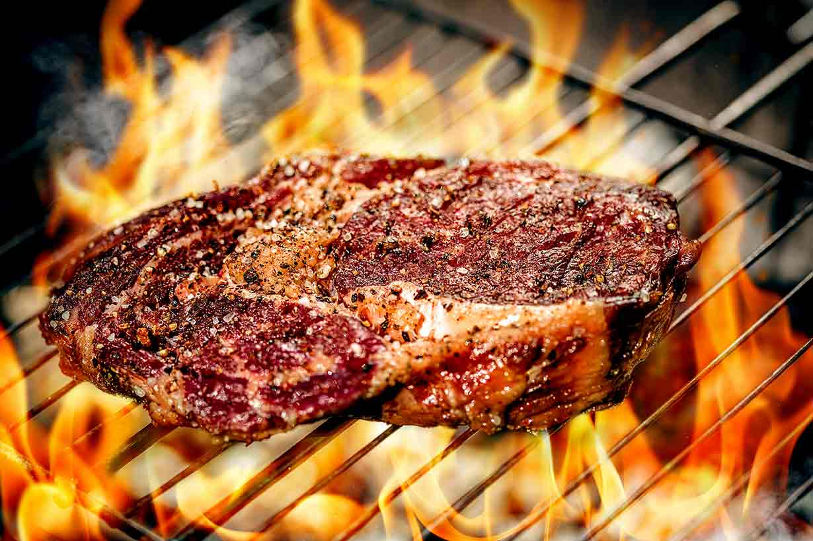

The Recipes.
Steak continues to be a cherished global culinary classic today, with a variety of regional styles and techniques. Steak has become a staple in many different cuisines, from Argentinean asado to Japanese Wagyu, as a result of the farm-to-table movement's emphasis on quality and sustainability.
Skillet Pepper Steak & Rice Recipe
This large steak can feed two or more people, and it can easily be prepared at home. This recipe includes a garlic-thyme butter sauce that really takes the dish to the next level. Serve it with a full-bodied red wine like cabernet sauvignon and a veggie side, and recreate this classic steakhouse splurge for a fraction of the cost.

Ingredients:
- 1 tomahawk rib-eye steak, about 1 3/4 inches thick
- Kosher salt, to taste
- Freshly ground pepper, to taste
- 1 small head garlic
- 2 tablespoons oil, plus more for drizzling (canola or
grapeseed) - 4 tablespoons (1/2 stick) unsalted butter
- 4 large sprigs fresh thyme
Step by step procedure:
- Gather the ingredients. Position a rack in the center of the oven and preheat to 350 F.
- Pat the tomahawk steak dry with paper towels.
- Season very liberally with kosher salt and freshly ground pepper. Let the steak come to room temperature.
- Meanwhile, prepare the garlic. Trim off the top 1/4 inch of the garlic bulb. Drizzle with the oil and add a pinch of salt, then wrap in a foil tent, and roast the garlic for 30 minutes, until the cloves are soft. Remove from the oven and allow to cool. Increase the oven temperature to 425 F.
- Optional: Moisten a paper towel and wrap it around the steak's rib bone, then wrap aluminum foil around the paper towel.
- In a large heavy-duty skillet (preferably cast-iron), heat the 2 tablespoons of oil over medium-high heat until it's just starting to smoke. Lay the tomahawk steak into the skillet and sear for 3 minutes without touching it. (Step back a bit since it will smoke and spatter.)
- Using tongs and the bone as a handle, turn the steak over and cook for another 3 minutes without touching it. Using tongs and the bone as a handle, sear the short side of the steak opposite the bone, about 1 minute.
- Transfer the steak to a rimmed baking sheet and place in the oven, roasting 9 to 10 minutes, or until the desired doneness is reached.
- Use an instant-read thermometer to measure the steak's internal temperature―125 F for rare, 135 F for medium-rare, or 145 F for medium. The meat will continue to cook while it rests and increase by 5 to 10 degrees, so take that into account when pulling your steak out of the oven.
- While the steak is in the oven, add the butter to the skillet and melt over low heat. Squeeze the roasted garlic cloves into the butter, stirring with a wooden spoon to distribute, then add the thyme sprigs and continue to cook, about 2 minutes.
- When the steak is ready, take it out of the oven, and transfer it back into the skillet. Use a spoon to baste the butter and garlic over the steak. Turn the steak, and baste again, about 1 minute total. Transfer the steak to a cutting board, tent it with foil, and let it rest 10 minutes.
- If you've wrapped the bone in the optional paper towel and foil, remove it now.
- Slice the steak against the grain, then drizzle with more of the butter and garlic. Serve and enjoy.